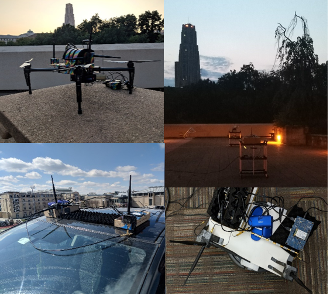

Project: Wireless Sensing
|

|
This project aims to re-use existing wireless communication radios as sensors. We develop solutions to use Wi-Fi radios as material scanners that can quickly scan the environment for the presence of humans, even if they are hidden (e.g. under rubble). We also developed novel gesture based interfaces that transform ordinary surfaces, such as our clothes, into shape-aware objects that can detect our gestures and postures. The WiTech lab has developed rich literature advancing state-of-the-art wireless localization, to track objects at sub-meter accuracy indoors, where GPS does not operate. |
Video Highlight
Publications
- Software Defined Cooking using a Microwave Oven , Haojian Jin, Jingxian Wang, Swarun Kumar and Jason Hong, MobiCom 2019 (ACM GetMobile Research Hightlight) [PAPER] [SLIDES] [WEBSITE]
- On the Feasibility of Wi-Fi Based Material Sensing , Diana Zhang, Jingxian Wang, Junsu Jang, Junbo Zhang, Swarun Kumar, MobiCom 2019 [PAPER] [SLIDES] [WEBSITE]
- Decimeter-Level Localization with a Single WiFi , Access Point, Deepak Vasisht, Swarun Kumar and Dina Katabi, NSDI 2016
- Accurate Indoor Localization with Zero Startup Cost, Swarun Kumar, Stephanie Gil, Dina Katabi and Daniela Rus, ACM MOBICOM 2014 (Best Presentation Runner-up) [PAPER] [WEBSITE]
- LTE Radio Analytics Made Easy and Accessible, Ezzeldin Hamed, Dina Katabi, and Li Erran Li, ACM SIGCOMM 2014 [PAPER] [WEBSITE]
Project Participants
- PI: Swarun Kumar
- Students: Diana Zhang, Haojian Jin and Junbo Zhang
- Collaborators: Prof. Stephanie Gil and Prof. Dina Katabi